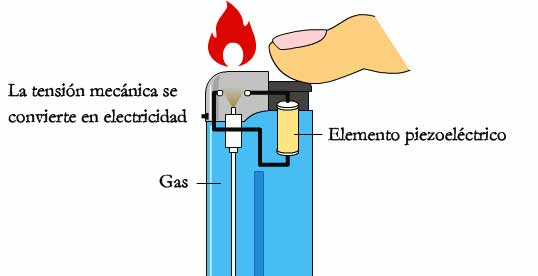

INTRODUCCIÓNEn la actualidad, el uso constante de dispositivos electrónicos como celulares, tabletas y laptops dentro de las instituciones educativas ha generado la necesidad de contar con espacios seguros y accesibles para su carga. Por ello, se propone la instalación de lockers de carga protegidos mediante candados electrónicos con detección de huella dactilar, ubicados en la planta baja, específicamente en el muro frente a los edificios B y C. Este sistema no solo brindará seguridad, sino que también incorporará el uso de energía generada a través de placas piezoeléctricas, fomentando el uso responsable de la energía. La propuesta consiste en implementar lockers diseñados especialmente para la carga de dispositivos electrónicos. Estos lockers estarán equipados con sistemas de seguridad avanzados que funcionarán mediante la identificación de la huella dactilar del usuario, lo que permitirá evitar robos o accesos no autorizados. Uno de los aspectos más innovadores de este proyecto es el uso de placas piezoeléctricas como fuente de energía. Estas placas tienen la capacidad de transformar la energía mecánica, como el paso de las personas, en energía eléctrica. Al ser instaladas en áreas de alto tránsito en la planta baja, permitirán generar electricidad de manera constante y sustentable. La energía recolectada será utilizada para abastecer los lockers, garantizando un funcionamiento continuo de aproximadamente 15 horas diarias, durante 6 días a la semana. Esto reduce la dependencia de fuentes eléctricas tradicionales y contribuye al cuidado del medio ambiente. Además, este proyecto busca fomentar una cultura de responsabilidad energética dentro de la institución. Al hacer uso de energías limpias y renovables, los estudiantes y el personal podrán tomar conciencia sobre la importancia del ahorro energético y el uso de tecnologías sostenibles. La ubicación estratégica frente a los edificios B y C permitirá que el acceso sea práctico y eficiente para la mayoría de los usuarios, optimizando su uso y aprovechamiento. |
